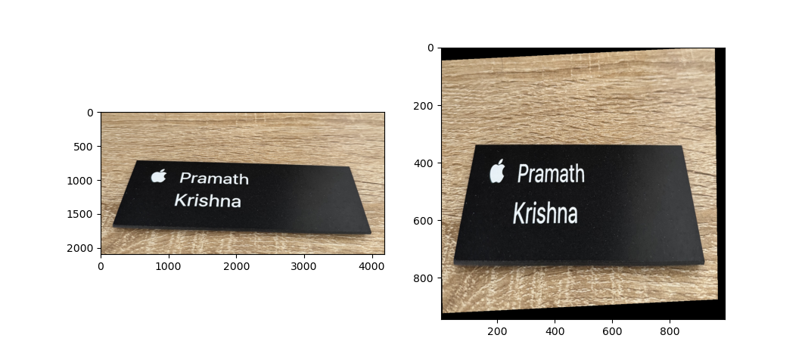
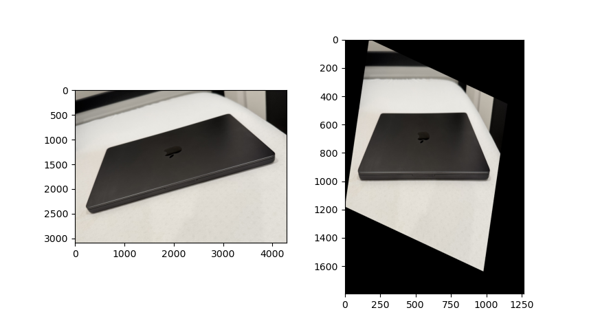
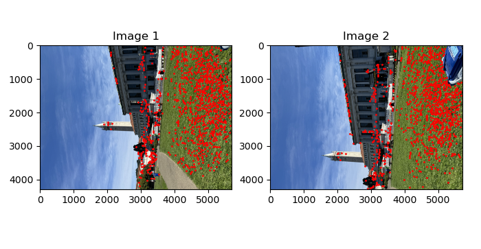
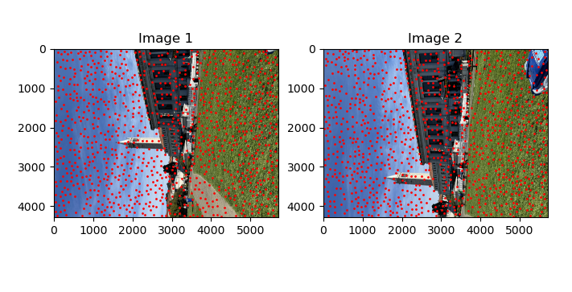
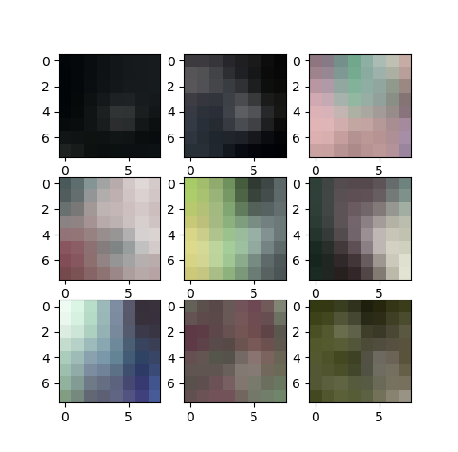
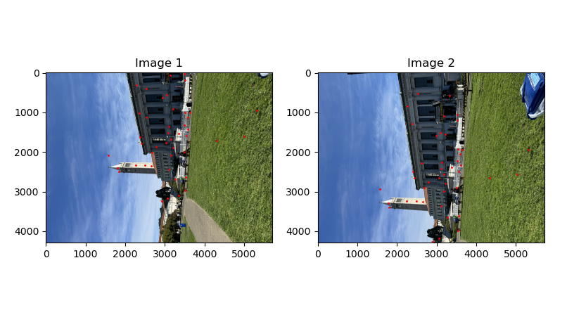
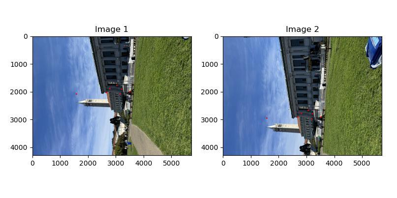

In this first part of the project, correspondences were manually annotated. Then, a homography was calcuated, the images were warped and then finally stitched together. The images were all shot by me on phone cameras.
Rectification was done to rectify known objects like laptops and nameplates to the rectangles. Below are the results of 2 different rectifcations. The image on the left is the original and the right is the rectified image.
 Based on images I captured, I rectified one image into another and then stiched the images together. These steps were repeated for other images. In order to blend the images together, I used laplacian stack blending. Not only did that reduce edge effects, it also blended any slight misalignment. The mosaics are shown below.
Balcony View

Glade view


Living room view
Given the laborous process of annotating correspondences, this process was automated using corner detection, feature extraction and feature matching. These techinques allow you to generate correspondences automatically and then similar stitching and blending methods can be applied to obtain panaromas. The sections below will detail this process.
Harris corner detection algorithm was used to detect "corners" in the images. Below are some intermediate results of the corners detected overlaid on the original images. The top 1k points were picked. As you can see in the image below, all the points cluster around and spread out unevenly.
In the paper titled "Multi-Image Matching using Multi-Scale Oriented Patches", they detail a novel algorithm to pick out strong corner points that are also well spaced spatially. Here is how the algorithm works. First, all the points detected by the Harris corner detector is sorted in descending order according to the corner strength. Each point is initialized with a suppression distance of infinity. The first point will have a supression distance of infinity since there are no other points ahead of it that can suppress it or in other words, it is the global maximum. For the subsequent points, its suppression distance is determined by distance to the nearest stronger point. For the second point, that would be the first point. For the third point, it could be either the first or second point. You get the idea. Then finally, once all the supression distances have been identified, the points are sorted in a descending order according to the suppression distances and the top-k points are kept. This allows you to find the strong yet spatially spread out points. You can see that effect in the images below.
As mentioned in the paper, for each image, a 40x40 patch around every point of interest(POI) is taken. This patch is subsampled to get a 8x8 patch. These 64 pixel values will be the feature. The 8x8 patch is normalized in the same way mentioned in the paper. Below are images of random patches of the image.
Once features are extracted for all POIs, it is now time to match these features between the different images. Using a simple thresholding would still cause many false positives of matches. David lowe's trick was used to solve that problem. The metric of matching the features were as follows: distance to first nearest neighbor divided by average distance to second nearest neighbor. The threshold was set to 0.4 since that provided the best results. This is also verified in the paper.
It turned out that using David Lowe's trick only did not solve all the issues. There were still some outlier points. For that, the RANSAC algorithm was used. Here is how the algorithm works. 4 pairs of points are sampled at random without replacement from all the matches. These 4 points from image 1 were used to construct the homography matrix H. Then, this homography is applied to all the other points in image 1. This will give the transformed points to image 2. The sum of squared distance was taken between these transformed points and the corresponding points on image 2. If this error is less than 2 pixels, then it is considered an inliner. The number of inliners was kept track of. This process was repeated for 5000 iterations. The biggest set of inliners was kept. This set was used to recompute the homography and that is the final homography that will be used. Below are the points left after this RANSAC algorithm.
Once the correspondences were defined between images, the stitching was similiarly to the previous 4a where laplace stacks were used to blend the images. Below are the results.
Glade view (left-manual, right-auto)

Living room view (left-manual, right-auto)
Building view (left-manual, right-auto)

There was a lot to learn in this project. I realized how much tweaking the paramters like the thresholding in outlier removal, minimum distance in harris detector or epsilon in RANSAC made a difference to the results. I also learnt how the accuracy of the correspondences play a vital role in the final panaromas. In the results above, you can see that the automated approach actually produced better aligned panaromas and this was solely due to the correspondences since that was the only thing different.